本书作者：测试开发刚哥，文章版权归个人所有，未经授权请勿转载。
FastAPI 的路径操作函数，可以使用async def定义：
from typing import Union
from fastapi import FastAPI
app = FastAPI()
@app.get("/")
async def read_root():
return {"Hello": "World"}
@app.get("/items/{item_id}")
async def read_item(item_id: int, q: Union[str, None] = None):
return {"item_id": item_id, "q": q}
这算得上是 FastAPI 的典型特征之一。
关于这个框架设计，有哪些技术背景和细节呢？
技术背景
在 Python 语法里面，如果你想异步请求三方库，需要使用 await：
results = await some_library()
使用了 await 就必须在 def 前面加上 async：
@app.get('/')
async def read_results():
results = await some_library()
return results
这是 Python 语法规定。
FastAPI 并不要求所有的路径操作函数，都必须定义为 async，假如你要实时访问某些三方库，可以简单的使用 def 就行，不用加上 await：
@app.get('/')
def results():
results = some_library()
return results
但是无论你是否使用 async，FastAPI 都将异步工作，以达到"Fast"的运行速度。
看完文章就明白这句话的意思了。
技术细节
Python 新版本已经原生支持异步代码了。所谓异步代码，指的是编程语言，会告诉计算机程序，在某个时刻停下来，等待其他任务完成后，再继续运行。在等待期间，计算机程序可以去干点别的事情，而不用一直卡在那里。这些“其他任务”，通常指的是耗时较长的 IO 操作，比如：
-
客户端通过网络发送数据；
-
服务端通过网络发送数据；
-
程序从磁盘读取文件内容；
-
程序将文件内容写入磁盘；
-
远程 API 操作；
-
数据库操作；
-
数据库查询返回结果；
这些操作主要阻塞在 IO 等待，所以又叫做 IO 密集型。
并发和并行
异步有时候也叫做并发。并发(Concurrency)和并行(parallelism)是不同的概念，并发是指一个处理器同时处理多个任务，并行是指多个处理器同时处理多个不同的任务，并发是逻辑上的同时发生，并行是物理上的同时发生。
并发
餐厅有 1 个服务员和 1 个厨子。
你带女朋友到餐厅排队点汉堡：
你们给服务员说来 2 个汉堡：
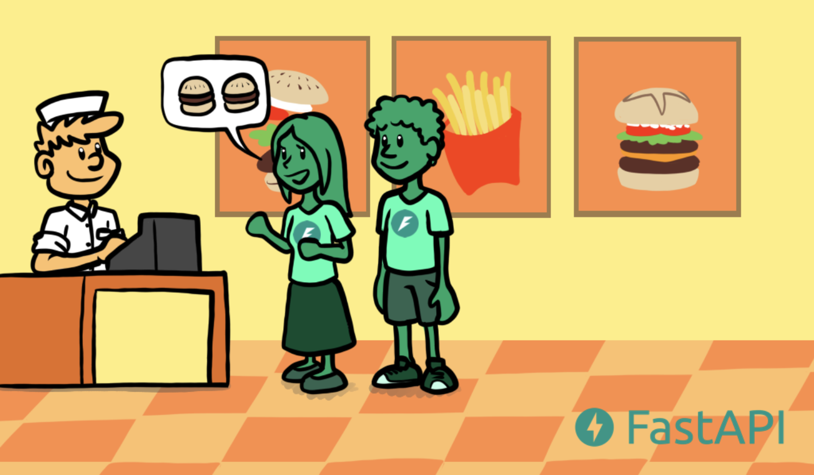
服务员给厨师说做 2 个汉堡：
然后给了你们一个排号：
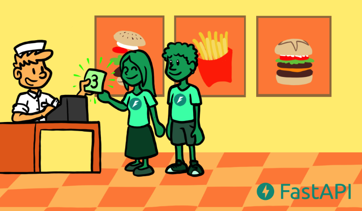
你们开心的等，因为有排号，不需要担心别人会抢走：
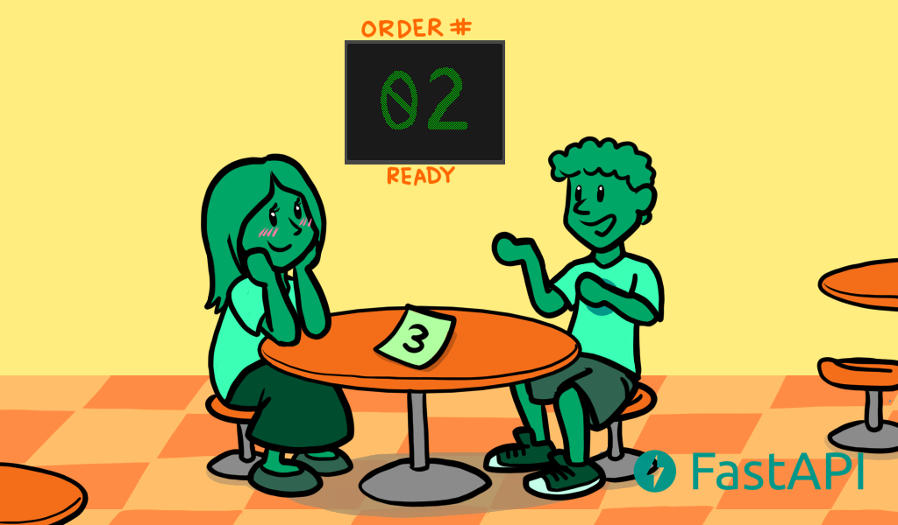
叫号了：
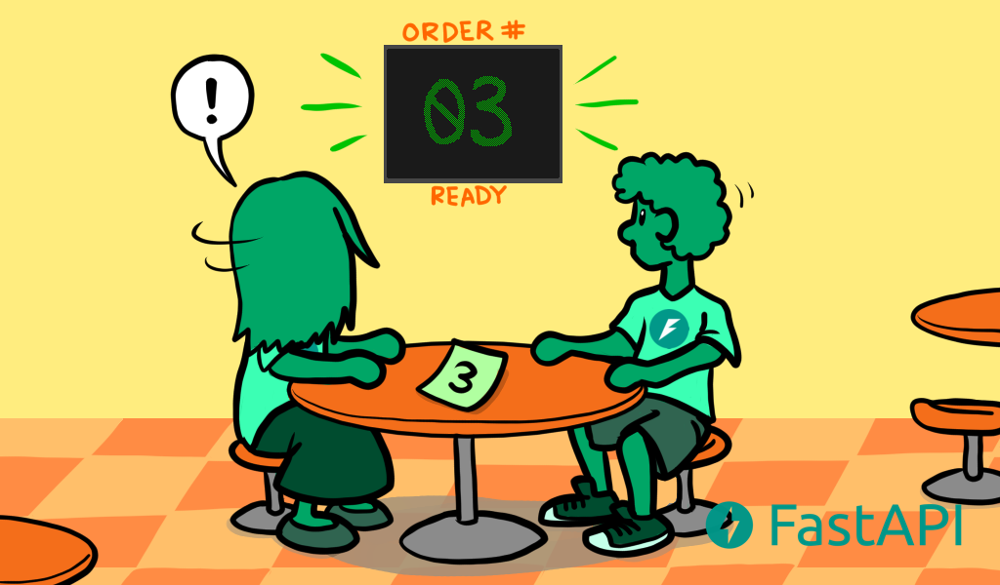
取了汉堡高高兴兴的吃：
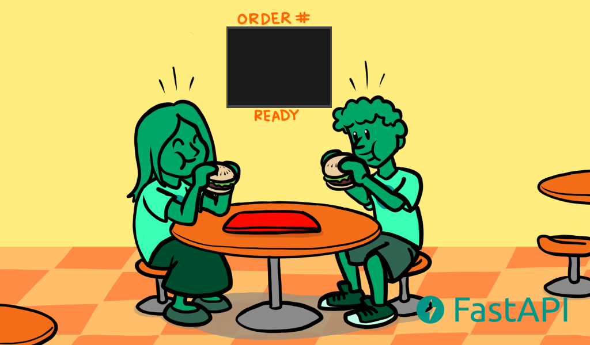
并行
餐厅有 5 个服务员兼厨子。
你们看哪个窗口有空位：
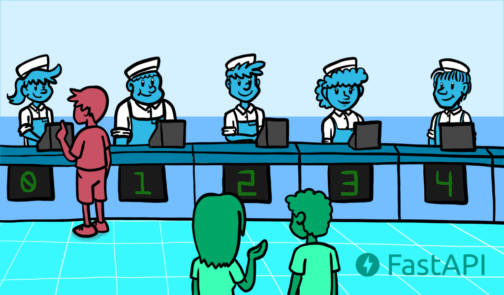
到餐台点 2 个汉堡：
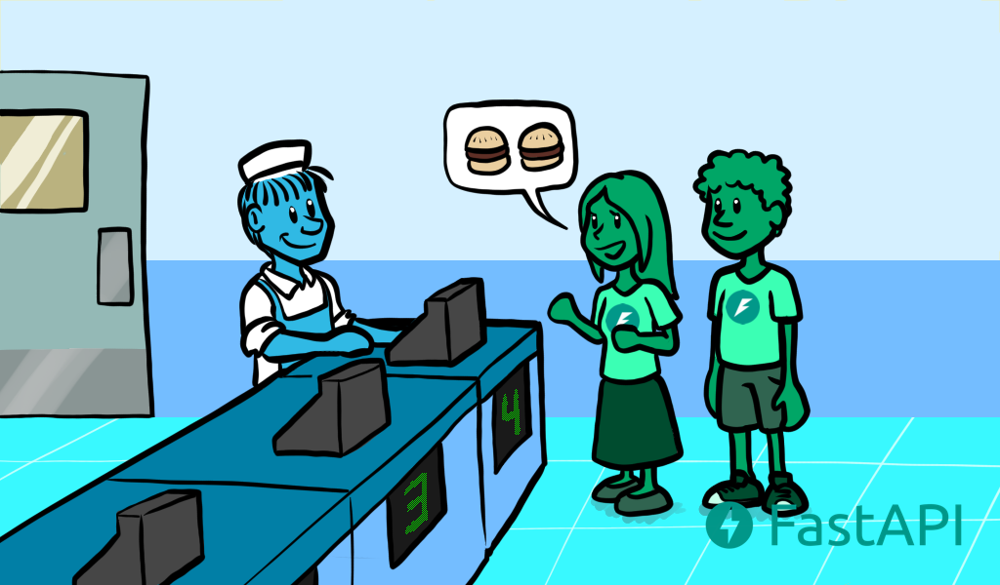
服务员自己跑到厨房做汉堡：
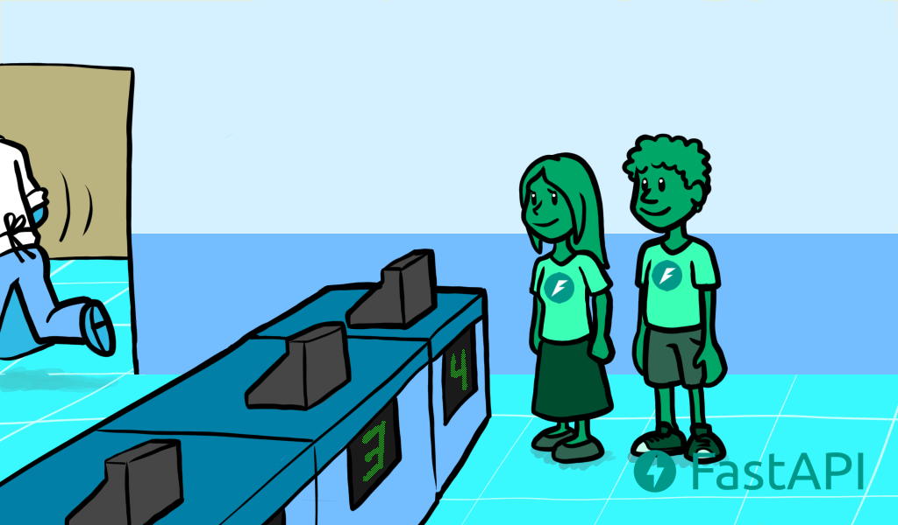
你们只能站在原地等，如果走开，可能会被其他人拿走：
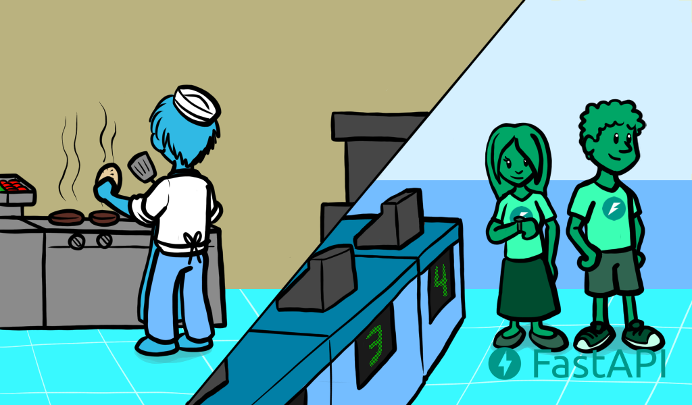
汉堡做好了：
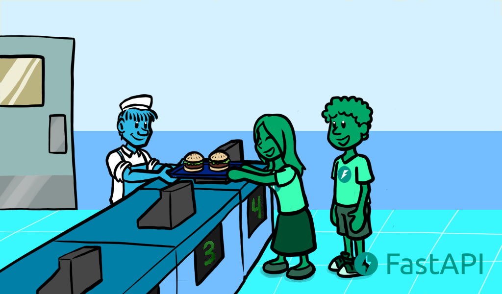
你的女朋友不开心：
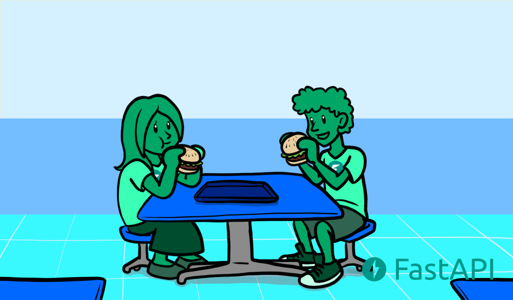
从这个买汉堡的漫画中，可以看到并行比并发会做更多无意义的等待，并行需要 5 个人（5 个服务员兼厨子），并发只需要 2 个人（1 个服务员 1 个厨子）。这就是为什么很多 Web 框架要设计成异步并发了，因为很多客户端会发请求给服务端，然后服务端响应给客户端，如果有太多无用的等待，那么整个应用将慢得无法使用。而且硬件资源有限，并发也能更高效利用资源，节约成本。
并发一定就比并行好吗？也不是，只有在出现很多等待时，并发才比并行好。比如你们要打扫房间，一间一间的打扫，没有等待，那么并发和并行就没有区别，如果你再叫 3 个朋友一起打扫，并行就能更快打扫完。这种执行时间完全取决于任务本身而不是等待的情况，又叫做 CPU 密集型。计算机里的 CPU 密集型操作通常需要更复杂的数据计算，比如：
-
音频或图片处理；
-
计算机视觉；
-
机器学习；
-
深度学习；
FastAPI 既支持异步并发，也支持多线程并行。
async 和 await
异步并发使用 async 和 await 来实现。
async定义函数：
async def get_burgers(number: int):
# Do some asynchronous stuff to create the burgers
return burgers
await调用函数：
@app.get('/burgers')
async def read_burgers():
burgers = await get_burgers(2)
return burgers
细节中的细节
FastAPI 会对路径操作函数(path operation function)和依赖(dependencies)进行特殊处理。这个特殊处理是：如果你把函数定义为 def 而不是 async def，那么 FastAPI 会把它放到单独的线程池中，异步执行，这就是 FastAPI 精彩的地方。就像官方所说，如果你不清楚你函数里面的调用是不是异步(能不能用 await)，那么就把它定义为普通函数，FastAPI 会采用多线程的方式处理。乱用 async，在 async 里面有同步调用，则会变成串行，Fast 秒变 Slow。
而对于其他函数，FastAPI 则不会管，def 就是同步调用，立马返回结果。
现在回过头来看前面的那句话：但是无论你是否使用 async，FastAPI 都将异步工作，以达到"Fast"的运行速度。应该更加明白了。
参考资料：
Concurrency and async / await - FastAPI https://fastapi.tiangolo.com/async/
很火的 Fastapi 框架，用 async 函数真的比普通函数快吗？https://blog.csdn.net/yyw794/article/details/108859240